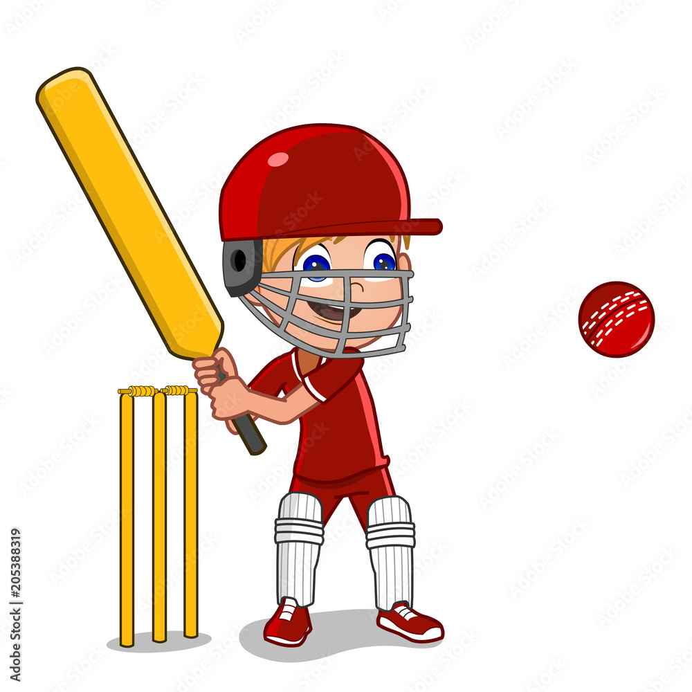
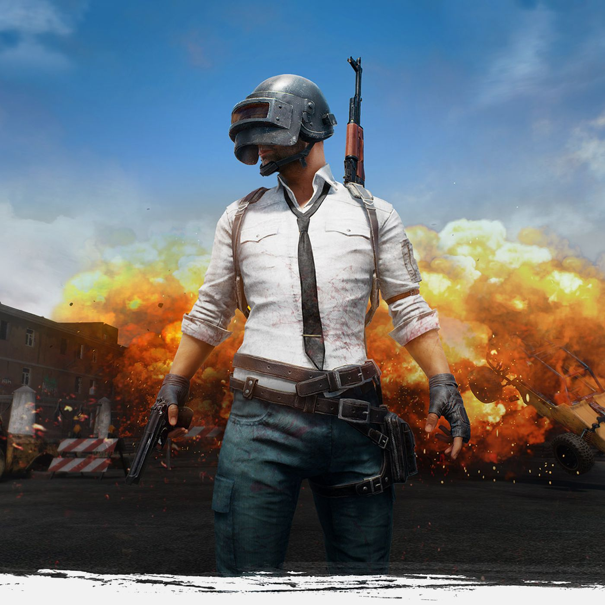
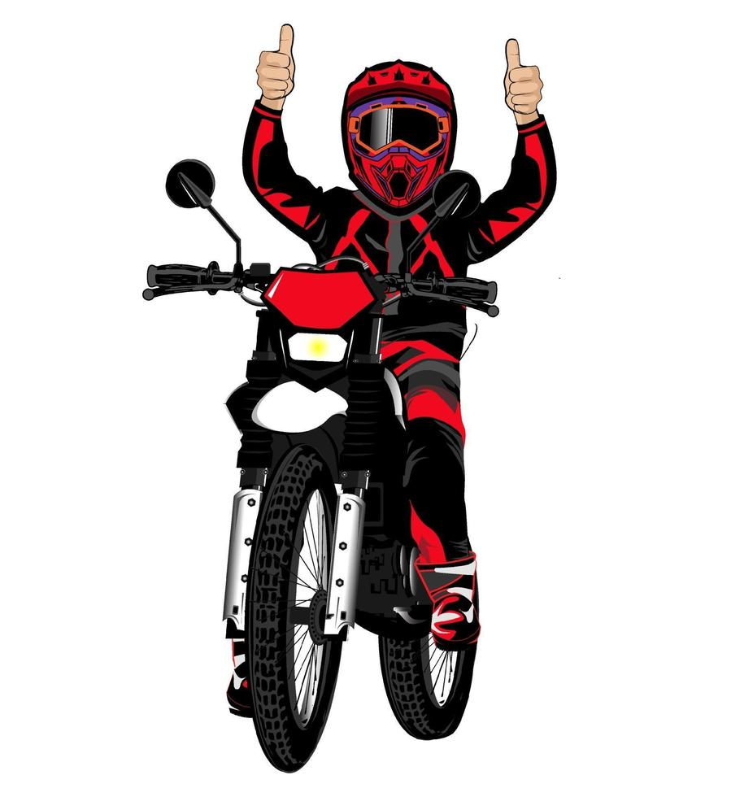

MY HOBBIES
CRICKET

I love cricket than other sports. Because cricket giving a great feelings. Every time our team will be winning and it giving me so happy. I can enjoy and feeling good while watching cricket. In cricket every team members giving effort and keeping mutual understanding between team members.
CUBING

For me, and everyone I've encountered who can solve the Rubik's Cube, it's a pastime. Not unlike those in the 19th century, going through the exercise occupies one's hand-eye coordination and occasional focus or critical thinking. The algorithm for solving the cube is not magic
VIDEO GAMING

The reason I believe we love video games is because they give us a sense of accomplishment. The feeling you get when you complete a good game is a feeling that's hard to compete with. It makes you feel important; like you have done something right.
PAINTING

Painting boosts self-esteem and inspires people to reach new levels of skill. Painting also produces a relaxing, open environment where artists feel safe to explore their own creativity. The reward of growing and expanding artistic skills creates a sense of accomplishment.
BIKE RIDING

To be a passionate and enthusiastic biker, you need to be in touch with your bike and not just ride it and then ignore it when it is standing alone in your parking. I urge every biker to invest some more time and passion into motorcycling, because after all, we are a nation dominated by motorcycles